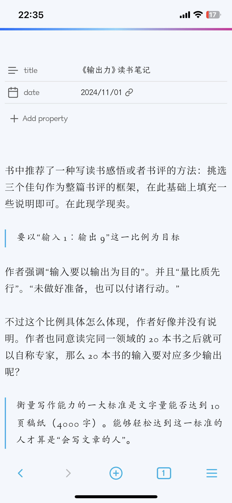

终于把博客模版折腾成了自己喜欢的样子，我又想把 Obsidian 的外观样式也搞成一样的。
我先是找到一个很喜欢的主题：Virgo，本来打算在它的基础上稍加改动，做一个自己的主题。我甚至让 ChatGPT 帮我想了一个名字：Vega。
在折腾的过程中，无意间发现了 Appearance 设置页面最下方有一项叫做 CSS snippets，才意识到不用自己做主题也能达到同样的效果。
在此记录一下我做的改动：
- 添加字体：思源宋体、楷体、Linden Hill, Jost
- 链接样式：去掉颜色，下划线变虚线
- 编辑/预览区最大宽度：65ch（避免在电脑上显示时每行字数过多）
- 左右边距：0.5rem（充分利用手机屏幕的宽度）
最终效果如下（iOS 端配合 Virgo 主题使用）：
